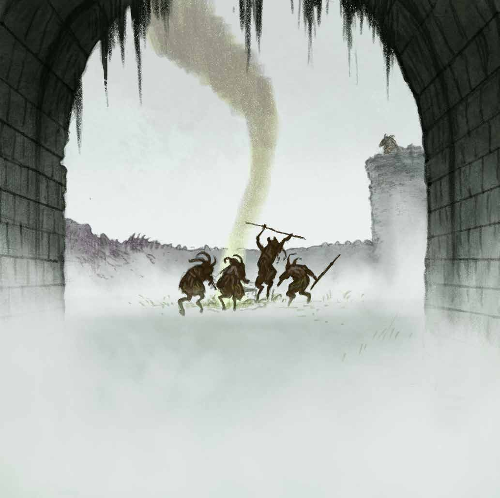

Droomen Knoll
A ruined tower on a low hill on the east bank of the upper River Hameth, a short march inland from the Falls of Nyf. Clement Dunwallow recognised it from a dream in which the ruin had been sheathed in ice.

The Ruined Tower ¶
The party heard pan-pipes and drums before they saw the fire. On top, three gnarled breggles tending a cooking fire and eating Woodgrue. In the courtyard above, winged creatures came out of a hole in the side-tower floor and attacked everyone.
The Dungeon Below ¶
A damp flagstone corridor opens beyond a stair. The party found:
- The sundial corridor. An ornate sundial with a glowing gnomon. Beside it an elven figure inscribed with On the slow creep of eons, Mallowheart's mercy may shine. Shining a torch on "seven past noon" let Thinwhistle out of his cell.
- The cells. Thinwhistle's cell, and next to it the cell Clement Dunwallow knew from his dream. Curses scratched into the wall: Mallowheart be cursed. Famine Whistle be doubly cursed. Hound baker. The skull of an elf courtier, who Thinwhistle says was killed by Prince Mallowheart.
- The frost chamber. Six alcoves of faded fey-noble murals: Prince Mallowheart, flanked by Lady-heart-torn-in-tatters (his mortal daughter) and by two unnamed elves labelled "Prince 7 Past Noon"; Lord Slumberbone; Lady Silver So Mirrored; a frost-clad knight of the Cold Prince; and Whisper of Candle Light. A seventh mural under the table: red hounds at the feet of a scraggle-haired elf with a whistle (Famine Whistle Wither).
- The drained drune. A dead drune in a guano-strewn chamber, bled through small puncture wounds. On him: an owl torque, a Scroll of Decipher, and the gem that gave the vision of The Whything Stones.
- Grognot's chamber. Where Grognot kept a human from Dreg tied up, and breathed the fumes of his yellow candles.
- The icy basin. Past a false wall. A cold chamber with snowfall from the ceiling, and a ten-foot stone basin rimmed with stag-skulls. A chalice of ice was under the frozen surface; it only yielded to a gift of Clement's blood.
Explored: Sessions 1 to 3.